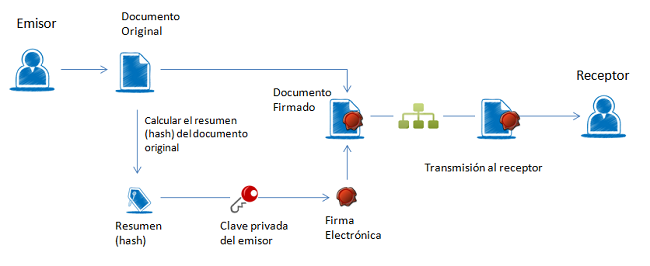
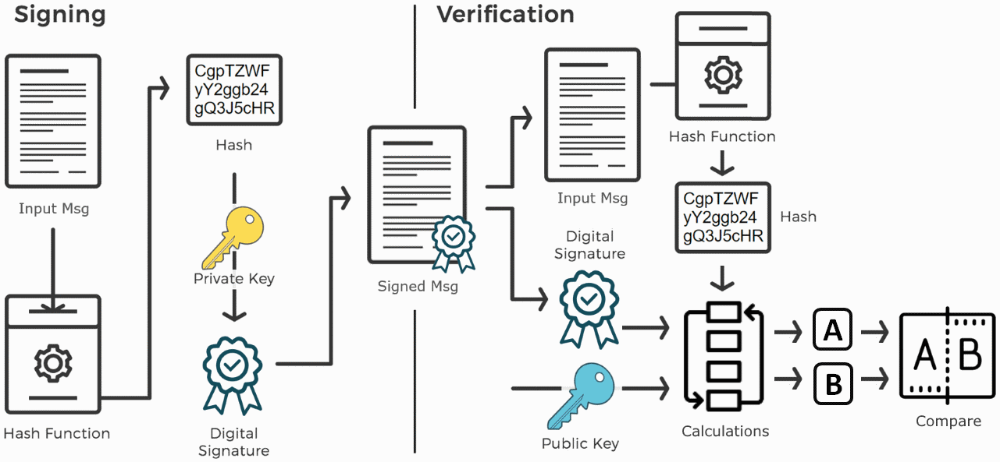

Unidad 6. Técnicas de programación segura. Encriptación asimétrica
Índice
Encriptación asimétrica
Clave pública y clave privada
La criptografía asimétrica o criptografía de clave pública supuso una auténtica revolución en su momento. Permitía el intercambio seguro de información (confidencialidad, autenticación y no repudio) entre interlocutores que no compartían ningún secreto.
Se creó en los años 70 a partir del trabajo de Diffie y Hellman por una parte y de Rivest, Shamir y Adleman por otra.
Se basa en la existencia de un par de claves, una pública y otra privada, entre las cuales existe una relación matemática, de manera que es muy difícil obtener la clave privada a partir de la pública. Sin embargo, es muy sencillo obtener la clave pública a partir de la privada.
Algoritmo RSA
En la familia de algoritmos RSA (Rivest, Shamir y Adleman) la clave pública consiste en un número que es el producto de dos factores primos muy grandes (mayores que 10^100) y la clave privada se deriva de la factorización de dicho número, es decir, los dos factores primos.
Requiere poco procesamiento multiplicar dos números primos tan grandes, pero requiere una cantidad enorme de cálculos encontrar la factorización del número.
A diferencia del cifrado simétrico, el el cifrado asimétrico se usan funciones diferentes para cifrar y descifrar los mensajes.
- Para encriptación se usa la clave pública. Cualquiera puede tener acceso a la clave pública, mediante la cual, usando la función de cifrado, se encripta la información dirigida a un destinatario concreto (el propietario de la clave privada asociada).
- Para desencriptación se usa la clave privada, que debe mantenerse a buen recaudo ya que sólo con esa clave y la función de descifrado se puede desencriptar un mensaje cifrado con la clave pública correspondiente.
Entre los algoritmos de cifrado asimétrico más utilizados se encuentran
- Rivest Shamir Adleman (RSA). Basado en la factorización de números primos grandes.
- Digital Signature Standard (DSS), que incorpora Digital Signature Algorithm (DSA).
- Elliptical Curve Cryptography (ECC). Está basado en las matemáticas de las curvas elípticas
- the Diffie-Hellman exchange method.
- TLS/SSL protocol.

Firma digital
Con la firma digital Para cifrar y descifrar un mensaje necesitamos una clave y escoger el tipo de cifrado que queremos. En JCA se procede de la siguiente forma:

El proceso básico que se sigue para la firma electrónica es el siguiente:
- El usuario dispone de un documento electrónico (una hoja de cálculo, un pdf, una imagen, incluso un formulario en una página web) y de un certificado (clave pública y clave privada) que le pertenece y le identifica.
- La aplicación o dispositivo digital utilizados para la firma realiza un resumen del documento. El resumen de un documento de gran tamaño puede llegar a ser tan solo de unas líneas. Este resumen es único y cualquier modificación del documento implica también una modificación del resumen.
- La aplicación utiliza la clave privada para codificar el resumen.
- La aplicación crea otro documento electrónico que contiene ese resumen codificado. Este nuevo documento es la firma electrónica.
El resultado de todo este proceso es un documento electrónico obtenido a partir del documento original y de las claves del firmante. La firma electrónica, por tanto, es el mismo documento electrónico resultante.

Integridad
Como estamos comparando funciones de resumen de un documento, se puede detectar de forma muy sencilla si el documento ha sufrido alguna modificación respecto al momento en el que se firmó, garantizando de esta forma la integridad de la información firmada.
Autenticación y no repudio
Por las características de los algoritmos de cifrado se puede determinar, a partir del resumen cifrado con la clave privada, mediante el uso de la clave pública, que el mensaje recibido lo generó el propietario de la clave privada.
Con esta característica se puede probar y demostrar que el mensaje lo firmó el emisor y no cualquier otra persona, garantizando por un lado la autoría y por otro evitando que el emisor niegue haber generado esa información.
Certificados digitales
Un certificado digital es un documento electrónico expedido por una Autoridad de Certificación e identifica a una persona (física o jurídica) con un par de claves.Tiene como misión validar y certificar que una firma electrónica se corresponde con una persona o entidad concreta.
Contiene la información necesaria para firmar electrónicamente e identificar a su propietario con sus datos: nombre, NIF, algoritmo y claves de firma, fecha de expiración y organismo que lo expide.
La Autoridad de Certificación da fe de que la firma electrónica se corresponde con un usuario concreto. Esa es la razón por la que los certificados están firmados, a su vez, por la Autoridad de Certificación.
Claves digitales
En un certificado, las claves digitales son los elementos esenciales para la firma e identificación del firmante. Existen dos claves, la clave privada y clave pública, y trabajan de forma complementaria. Lo que cifra o codifica una clave sólo lo puede descifrar o decodificar la otra.
La diferencia entre ellas es que la clave privada está pensada para que nunca salga del certificado y esté siempre bajo el control del firmante. En cambio, la clave pública se puede repartir o enviar a otros usuarios.
En ocasiones, se habla de Certificado Privado para referirse al certificado que contiene la clave privada y la pública y del Certificado Público para referirse al certificado que sólo contiene la clave pública.
Creación de Certificados digitales
Obtener el Certificado Digital depende de si el certificado está contenido en una tarjeta, como el DNIe, o de si el certificado se guarda en un fichero software.
En ambos procesos hay un paso que es la identificación del responsable o usuario del certificado, lo cual requiere que éste se persone en las oficinas de una Autoridad de Registro. Estas oficinas corroboran la identidad.
!!!
Infraestructura de clave pública (PKI)
Una infraestructura de clave pública (PKI) es una combinación de hardware, software, procedimientos de seguridad y marco legal que, en su conjunto, permite la ejecución con garantías de operaciones criptográficas, cumpliendo los requisitos de integridad, confidencialidad, autenticación y no repudio.
Una PKI permite establecer y gestionar asociaciones entre claves públicas e identidades de personas y organizaciones.
La cuestión entonces es determinar si un certificado es válido o de confianza, ol o que es lo mismo, si representa a la persona u organización que aparece como titular y propietario del certificado.
Para dar por válido un certificado digital su firma digital debe ser válida y su emisor debe ser un emisor de confianza. Por lo tanto, ahora queda determinar qué emisores son de confianza.
Autenticidad de los certificados
Los certificados deben estar firmados por una AC por dos motivos
- Garantizar su integridad, de forma que cualquier intento de modificación del certificado lo invalide.
- Identificar al creador del certificado digital. Todo el sistema está basado en una relación de confianza, en la que la AC que ha firmado el certificado es un emisor de confianza, normalmente instituciones públicas o privadas de reconocido prestigio
!!!
En nuestro sistema podemos ver y modificar qué entidades de certificación consideramos como seguras, es decir, que los certificados que éstas hayan firmado los tomaremos como válidos.
Autoridades de confianza para apps de Azure
En Windows, si ejecutamos certmgr.msc podemos acceder a la configuración de certificados del sistema. En OSX lo podemos hacer con la aplicación Llavero.
Para nuestra navegación, la información de qué certificados considera el navegador como seguros, depende de en qué AC confiemos (por defecto en la instalación vienen configurados los más comunes)
Ver certificados y AC en Chrome
Certificados autofirmados
Hemos de tener en cuenta que, con herramientas como las que proporciona Java, SSH o GnuPG cualquiera puede generar un certificado digital con la información que quiera
Para las pruebas vamos a firmar nuestros propios certificados. Incluso dentro de una compañía podemos ejercer nosotros mismos como Autoridad de Certificación de Confianza, firmando nuestros certificados.
Debemos preparar la configuración de nuestros sistemas para que confíen en esos certificados autofirmados, asumiendo el riesgo que esto conlleva.
Generación de pares de claves
La generación y gestión de pares de claves implica dos aspectos fundamentales.
Por un lado, tenemos la creación de las claves. Las claves las podemos haber descargado, generado con alguna de las utilidades disponibles para ellos o bien, como veremos a continuación, se pueden generar desde una aplicación, igual que hacemos con las claves simétricas.
Por otro lado, tenemos la gestión del almacenamiento de las claves. Las claves no dejan de ser archivos, que podemos tratar como archivos especiales, pero que usualmente se almacenan en repositorios especiales, denominados keyrings a los que puede acceder una aplicación y desde los que gestionamos las relaciones de confianza.
El JCA nos proporciona clases generadoras de claves. Estas clases se apoyan en buenos algoritmos de generación de números aleatorios para satisfacer unos requisitos mínimos de seguridad.
SecureRandom
La generación de números aleatorios juega un papel fundamental en la criptografía, siendo uno de los Engine que proporciona el JCA junto con un amplio grupo de algoritmos.
La clase SecureRandom genera número aleatorios empleando alguno de los algoritmos disponibles y se puede utilizar un objeto de tipo SecureRandom para que los utilicen las clases generadoras de claves, tanto simétricas como asimétricas
Tipos de ficheros para certificados digitales
Hay varios tipos de ficheros que se utilizan para guardar certificados digitales siguiendo el estándar X.509. Generalmente uncertificado no contiene sólo la clave, sino que tiene información adicional.
Esxiten dos posibles codificaciones para almacenar certificados X.509
- der: Es una codificación binaria
- dem: Es una codificación en formato texto guardado en Base64 y tienen un encabezado y pie que delimita el contenido del certificado
Veamos un ejemplo de certificado con codificación dem
-----BEGIN CERTIFICATE-----
MIIDijCCAvOgAwIBAgIJAKRvtQxONVZoMA0GCSqGSIb3DQEBBAUAMIGLMQswCQYD
VQQGEwJVUzETMBEGA1UECBMKQ2FsaWZvcm5pYTESMBAGA1UEBxMJU3Vubnl2YWxl
MSAwHgYDVQQKExdBcnViYSBXaXJlbGVzcyBOZXR3b3JrczEMMAoGA1UECxMDVEFD
MSMwIQYDVQQDExpteXNlcnZlci5hcnViYW5ldHdvcmtzLmNvbTAeFw0wODA0MzAy
MzM3MDJaFw0xMDA0MzAyMzM3MDJaMIGLMQswCQYDVQQGEwJVUzETMBEGA1UECBMK
Q2FsaWZvcm5pYTESMBAGA1UEBxMJU3Vubnl2YWxlMSAwHgYDVQQKExdBcnViYSBX
aXJlbGVzcyBOZXR3b3JrczEMMAoGA1UECxMDVEFDMSMwIQYDVQQDExpteXNlcnZl
ci5hcnViYW5ldHdvcmtzLmNvbTCBnzANBgkqhkiG9w0BAQEFAAOBjQAwgYkCgYEA
zRwqc9prVXycGhHcsAjGPzC2MKU4DhXSr86Z89Jk8/cXEJBJ0C/NgdAqqDgxneUh
nVyxGxODa7BNGAWSagdCsKLrbkchr479E3xLfgdc3UzAJITLGCXGiQ66NwQDyM5I
G/xKYm4oqgyOE/lFTTkK0M8V0NmmJynyOCYC/AwQKjMCAwEAAaOB8zCB8DAdBgNV
HQ4EFgQUM5btT6IlPGkLTTPvFccTVURO1p0wgcAGA1UdIwSBuDCBtYAUM5btT6Il
PGkLTTPvFccTVURO1p2hgZGkgY4wgYsxCzAJBgNVBAYTAlVTMRMwEQYDVQQIEwpD
YWxpZm9ybmlhMRIwEAYDVQQHEwlTdW5ueXZhbGUxIDAeBgNVBAoTF0FydWJhIFdp
cmVsZXNzIE5ldHdvcmtzMQwwCgYDVQQLEwNUQUMxIzAhBgNVBAMTGm15c2VydmVy
LmFydWJhbmV0d29ya3MuY29tggkApG+1DE41VmgwDAYDVR0TBAUwAwEB/zANBgkq
hkiG9w0BAQQFAAOBgQBp71WeF6dKvqUSO1JFsVhBeUesbEgx9+tx6eP328uL0oSC
fQ6EaiXZVbrQt+PMqG0F80+4wxVXug9EW5Ob9M/opaCGI+cgtpLCwSf6CjsmAcUc
b6EjG/l4HW2BztYJfx15pk51M49TYS7okDKWYRT10y65xcyQdfUKvfDC1k5P9Q==
-----END CERTIFICATE-----
Además de la codificación, tenemos formatos de fichero estándar para guardar los certificados usando una de las codificaciones anteriores
- cer, crt, der: Contienen certificados X.509 estándares codificados como
der - p12: Realmente hace referencia a toda una familia de estándares asociados al algoritmo RSA y definen el formato de almacenamiento de distintos tipos de claves, los PKCS#n (PKCS#8, PKCS#12, etc). Pueden contener, además de los datos del certificado, una clave privada. Si contiene la clave privada, ésta estará protegida por una contraseña que será necesaria para acceder a la clave privada. PKCS en Wikipedia
Generación de claves desde Java
Usando las clases del JCA, estos son los pasos que debemos seguir para generar un par de claves desde código
- El primer paso para obtener un par de claves es obtener un objeto keyPairGenerator para el algoritmo que queramos utilizar.
- A continuación se inicializa el generador del par de claves llamando a alguna de las versiones del método initialize. En nuestro caso indicaremos el tamaño de clave para el algoritmo seleccionado y un generador de números aleatorios.
- El último paso es generar el par de claves y guardarlas en los objetos PrivateKey y PublicKey respectivamente.
- A partir de ese momento ya se pueden usar las claves para cifrar, descifrar e incluso para firmar. Sin embargo, si queremos reutilizar estas claves, lo que tendremos que hacer será guardarlas en sendos archivos.
A continuación podemos ver un ejemplo de generación de claves, almacenamiento de las claves en un fichero y visualización de la clave obtenida.
public class U6S4_1_GenerateRsaKeyPair {
private static final int tamanoClaveAsimetrica = 1024;
private static final String algoritmoClaveAsimetrica = "RSA";
private static final String ficheroClavePublica = "claves/clavepublica.der";
private static final String ficheroClavePrivada = "claves/claveprivada.pkcs8";
public static void main(String[] args) {
try {
// Elijo un algoritmo de generación de números aleatorios de los denominados
// altamente seguros para generar el par de claves
SecureRandom algoritmoSeguro = SecureRandom.getInstanceStrong();
// Preparo el generados de claves para usar el algortimo RSA
KeyPairGenerator genParClaves = KeyPairGenerator.getInstance(algoritmoClaveAsimetrica);
genParClaves.initialize(tamanoClaveAsimetrica, algoritmoSeguro);
// Creo el par de claves y lo guardo en objetos
KeyPair parClaves = genParClaves.generateKeyPair();
PublicKey clavePublica = parClaves.getPublic();
PrivateKey clavePrivada = parClaves.getPrivate();
// Guardamos la clave pública en un archivo y la visualizamos
// La clave se guarda con codificación DER y en formato X.509
guardaClavePublicaX509(clavePublica);
// Guardamos la clave privada en un archivo y la visualizamos
// La clave se guarda con codificación DER y en formato PKCS#8
guardaClavePrivadaPKCS8(clavePrivada);
} catch (NoSuchAlgorithmException ex) {
System.err.println("No se ha encontrado la implementación del algortimo en ningún Provider");
}
}
private static void guardaClavePublicaX509(PublicKey clavePublica) {
try (FileOutputStream publicKeyFile = new FileOutputStream(ficheroClavePublica)) {
X509EncodedKeySpec codificacionClavePublica = new X509EncodedKeySpec(clavePublica.getEncoded(), algoritmoClaveAsimetrica);
publicKeyFile.write(clavePublica.getEncoded());
// Visualizamos la clave por consola
MostrarClaveBase64(codificacionClavePublica.getEncoded(),
codificacionClavePublica.getFormat(), ficheroClavePublica);
} catch (IOException ex) {
System.out.println("Error almacenando la clave pública en " + ficheroClavePublica);
}
}
private static void guardaClavePrivadaPKCS8(PrivateKey clavePrivada) {
try (FileOutputStream privateKeyFile = new FileOutputStream(ficheroClavePrivada)) {
PKCS8EncodedKeySpec codificacionClavePrivada = new PKCS8EncodedKeySpec(clavePrivada.getEncoded(), algoritmoClaveAsimetrica);
privateKeyFile.write(clavePrivada.getEncoded());
// Visualizamos la clave por consola
MostrarClaveBase64(codificacionClavePrivada.getEncoded(),
codificacionClavePrivada.getFormat(), ficheroClavePrivada);
} catch (IOException ex) {
System.out.println("Error almacenando la clave privada en " + ficheroClavePrivada);
}
}
private static void MostrarClaveBase64(byte[] clave, String formatoClave, String ficheroClave) {
System.out.println("Clave guardada en formato " + formatoClave
+ " en fichero " + ficheroClave);
System.out.println(Base64.getEncoder().encodeToString(clave).replaceAll("(.{76})", "$1\n"));
}
}
Esta sería la salida proporcionada
Clave guardada en formato X.509 en fichero claves/clavepublica.der
MIGfMA0GCSqGSIb3DQEBAQUAA4GNADCBiQKBgQC4UFRgEIm3lFKO75QmqTPvkDs0fM6NUm2FHQcA
cQHawLx9/WKXh9xkx/xYZZcc4L2YQYcwTu4jfk889iGKGLn2Kh4ywBY+g8uZ6ljM5PT6f95dU6Zd
xATWOn1qsizBubf7kKhBL7xDnKU5do3XYzrSjme+9uIsgS7HQ7K0MbKrpQIDAQAB
Clave guardada en formato PKCS#8 en fichero claves/claveprivada.pkcs8
MIICdgIBADANBgkqhkiG9w0BAQEFAASCAmAwggJcAgEAAoGBALhQVGAQibeUUo7vlCapM++QOzR8
zo1SbYUdBwBxAdrAvH39YpeH3GTH/FhllxzgvZhBhzBO7iN+Tzz2IYoYufYqHjLAFj6Dy5nqWMzk
9Pp/3l1Tpl3EBNY6fWqyLMG5t/uQqEEvvEOcpTl2jddjOtKOZ7724iyBLsdDsrQxsqulAgMBAAEC
gYA97xBLL4N3YqnTSgIYc6b2Cxs56e5mYppWrohZx5996GHuXCSzEn4mh2TuN0Tt+T78WJiazQsM
djceHv7qLqDd2kWn3IR0gX207KxwjG0I/sAP2z/i9NZ7DPL+FUv8lmeYUfDj8h3wkyhmBqn+tan1
0xIOcZUrr/yRhrjZLI1SCQJBAPEc4uWSbyBLHVC6SNga7XWNmwi8Mq4PZJdhW9RJWDxg9zOlC/HV
rV60ddbfW/ldIqCH33DUge5U5YhD6Mla/XMCQQDDsahcwTksp2bJowMTRgFHT094sihtSlQ7sgdI
uAemuMvBmVTHleFBWMqz1rAN6A/76yef3WK4I+nsmeCGa+yHAkEA7BR1kYT8q+kATi/n7TkIcoZx
W28yTD2kJ5jbWhNqgswKn5WmCWdH9qfJjddrbdEke3wuaoKYqeyURgUAJE+kQwJADhEsQBanrH0Q
F3h/VRhYKS8bUFrGKy0Hpw7iFSkda6+m/fCutnYgrhja4ViSaT2AQKSjwYsheIkkXJynFiKV6wJA
PUHXqlvfgPr4w2U+Ddq7h/gp59kO0uojGrEBO0B2wt3PuuSQlZlMN97Ly9QmB6LYRtw6woCZZZOD
ePqA7rf8IA==
En el ejemplo anterior en lugar de utilizar clases estándar para volcar el contenido binario de las claves a un archivo en formato raw, se utilizan clases codificadoras para generar ficheros binarios en formatos estándares, tanto para la clave pública como para la privada.
Esto tiene la enorme ventaja de que se pueden utilizar las claves generadas con herramientas estándar como openssl. Además, facilita la tarea ya que las claves pública y privada para criptografía asimétrica son objetos compuestos.
Codificación Base64
Base64 es un grupo de esquemas de codificación de binario a texto que representa los datos binarios mediante una cadena.
Los esquemas de codificación Base64 son comúnmente usados cuando se necesita codificar datos binarios para que sean almacenados y transferidos sobre un medio diseñado para tratar con datos textuales. Esto es para asegurar que los datos se mantienen intactos y sin modificaciones durante la transmisión.
Los valores codificados en Base64 como texto se muestran en filas de 76 caracteres como máximo, para mejor legibilidad, y siguiendo convenciones habituales.
Para verlos en pantalla se añade un salto de línea después de cada grupo de 76 caracteres usando replaceAll("(.{76})", "$1\n").
Las claves que se han guardado con el programa tienen las siguientes características:
- La clave pública se guarda en un fichero
clavepublica.der, con el formato de la estructura SubjectPublicKeyInfo en formato ASN.1 definido en el estándar X.509, y con codificación DER (binaria). Para eso se ha utilizado la clase codificadora X509EncodedKeySpec. - La clave privada se guarda en un fichero
claveprivada.pkcs8, en formato PKCS#8, y con codificación DER (binaria). Para eso se ha utilizado la clase codificadora PKCS8EncodedKeySpec.
Codificaciones por defecto
Las codificaciones usadas en el programa coinciden con las codificacione por defecto que usan las clases PrivateKey y PublicKey, como se puede ver en los valores proporcionados por los métodos getFormat() y getEncoded().
Cifrado y descifrado usando un par de claves
Aunque ya hemos visto que las claves se pueden generar desde código, lo normal es que una vez hayamos generado un par de claves, estas se puedan reutilizar desde las aplicaciones para cifrar y descifrar información.
Si hemos guardado las claves en archivos, el primer paso que tendremos que realizar es recuperar esas claves para poder realizar las operaciones criptográficas con ellas.
Prueba de claves online
Podemos probar las claves generadas con una herramienta online.
Prueba a copiar el contenido (en Base64) de las claves pública y privada para hacer un cifrado y un descifrado de la información.
También puedes probar a simular una firma digital, realizando el cifrado con la clave privada y el descifrado con la clave pública.
Veamos un ejemplo de cómo se hace todo este proceso en Java
public class U6S4_2_RsaKeyPairEncrypt { private static final int tamanoClaveAsimetrica = 1024; private static final String algoritmoClaveAsimetrica = "RSA"; private static final String ficheroClavePublica = "claves/clavepublica.der"; private static final String ficheroClavePrivada = "claves/claveprivada.pkcs8"; public static void main(String[] args) { try { ////////////////////////////////////////////////// // CIFRADO ////////////////////////////////////////////////// // Leemos la clave pública de un archivo PublicKey clavePublica = leerClavePublica(ficheroClavePublica); // Preparamos la información que queremos cifrar String textoEnClaro = "Quiero cifrar este mensaje de prueba"; byte[] mensajeEnClaro = textoEnClaro.getBytes("UTF-8"); // Realizamos el proceso de cifrado con clave pública // Los pasos son exactamente los mismos que con el cifrado simétrico Cipher cifrado = Cipher.getInstance(algoritmoClaveAsimetrica); cifrado.init(Cipher.ENCRYPT_MODE, clavePublica); byte[] mensajeCifrado = cifrado.doFinal(mensajeEnClaro); // Visualizamos el mensaje cifrado en modo texto MostrarMensajeBase64(mensajeCifrado); ////////////////////////////////////////////////// // DESCIFRADO ////////////////////////////////////////////////// // Leemos la clave privada de un archivo PrivateKey clavePrivada = leerClavePrivada(ficheroClavePrivada); // Realizamos el proceso de descifrado con clave privada // Los pasos son exactamente los mismos que con el cifrado simétrico // Cipher cifrado = Cipher.getInstance(algoritmoClaveAsimetrica); cifrado.init(Cipher.DECRYPT_MODE, clavePrivada); byte[] mensajeDescifrado = cifrado.doFinal(mensajeCifrado); // Visualizamos el mensaje descifrado System.out.println("Texto descifrado:\n" + new String(mensajeDescifrado, "UTF-8")); } catch (UnsupportedEncodingException ex) { System.out.println("Codificación de caracteres UTF-8 no soportada"); } catch (NoSuchAlgorithmException ex) { System.err.println("No se ha encontrado la implementación del algoritmo " + algoritmoClaveAsimetrica + " en ningún Provider"); } catch (NoSuchPaddingException ex) { System.err.println("El relleno especificado para el algoritmo no está permitido"); } catch (InvalidKeyException ex) { System.err.println("Especificación de clave no válida"); } catch (IllegalBlockSizeException ex) { System.err.println("Tamaño de bloque no válido"); } catch (BadPaddingException ex) { System.err.println("Excepción con el relleno usado por el algoritmo"); } } private static PublicKey leerClavePublica(String ficheroClave) { byte[] clavePublicaEncoded; // Leemos la información del archivo try (FileInputStream publicKeyFile = new FileInputStream(ficheroClave)) { clavePublicaEncoded = publicKeyFile.readAllBytes(); } catch (FileNotFoundException ex) { System.out.println("No se ha encontrado el archivo " + ficheroClave + " con la clave pública."); return null; } catch (IOException ex) { System.out.println("Se ha producido un error de E/S accediendo al archivo " + ficheroClave + " de la clave pública."); return null; } // Generamos la clave a partir del array de bytes leídos KeyFactory keyFactory; try { keyFactory = KeyFactory.getInstance(algoritmoClaveAsimetrica); X509EncodedKeySpec codificacionClavePublica = new X509EncodedKeySpec(clavePublicaEncoded); PublicKey clavePublica = keyFactory.generatePublic(codificacionClavePublica); // Devolvemos la clave pública generada return clavePublica; } catch (NoSuchAlgorithmException ex) { System.err.println("No se ha encontrado la implementación del algoritmo " + algoritmoClaveAsimetrica + " en ningún Provider"); return null; } catch (InvalidKeySpecException ex) { Logger.getLogger(U6S6_RsaKeyPairEncrypt.class.getName()).log(Level.SEVERE, null, ex); return null; } } private static PrivateKey leerClavePrivada(String ficheroClave) { byte[] clavePrivadaEncoded; // Leemos la información del archivo try (FileInputStream privateKeyFile = new FileInputStream(ficheroClave)) { clavePrivadaEncoded = privateKeyFile.readAllBytes(); } catch (FileNotFoundException ex) { System.out.println("No se ha encontrado el archivo " + ficheroClave + " con la clave privada."); return null; } catch (IOException ex) { System.out.println("Se ha producido un error de E/S accediendo al archivo " + ficheroClave + " de la clave privada."); return null; } // Generamos la clave a partir del array de bytes leídos KeyFactory keyFactory; try { keyFactory = KeyFactory.getInstance(algoritmoClaveAsimetrica); PKCS8EncodedKeySpec codificacionClavePrivada = new PKCS8EncodedKeySpec(clavePrivadaEncoded); PrivateKey clavePrivada = keyFactory.generatePrivate(codificacionClavePrivada); // Devolvemos la clave pública generada return clavePrivada; } catch (NoSuchAlgorithmException ex) { System.err.println("No se ha encontrado la implementación del algoritmo " + algoritmoClaveAsimetrica + " en ningún Provider"); return null; } catch (InvalidKeySpecException ex) { Logger.getLogger(U6S6_RsaKeyPairEncrypt.class.getName()).log(Level.SEVERE, null, ex); return null; } } private static void MostrarMensajeBase64(byte[] mensajeCifrado) { System.out.println("Mensaje cifrado visualizado como texto en Base64:"); System.out.println(Base64.getEncoder().encodeToString(mensajeCifrado).replaceAll("(.{76})", "$1\n")); } }
Y esta es la salida proporcionada
Mensaje cifrado visualizado como texto en Base64:
EV+7WrEf+4CYwckys9blk6DXnLHUm4i0k+4BIp3oNmPdo2skYY8bQsAhXToBx2gi/rMIK9wiJTH0
yg99jpyaLeUgtga8PxWx1plgvxohzO/lALkf5AFRUczZh8F5QvOXCi93v2ycZCZXq7QmZTopkEQh
ARSezD/1Al2UYPc2X68=
Texto descifrado:
Quiero cifrar este mensaje de prueba
Cifrado siempre diferente, descifrado siempre igual
El resultado de cifrar un mensaje con la misma clave pública no siempre es igual, aunque al descifrar los mensajes con la clave privada siempre se obtiene el mensaje original.
Esto es debido a que, para aumentar la variabilidad (entropía) del mensaje cifrado al mensaje que se cifra se le añade una parte aleatoria (salt) que se descarta cuando se descifra.
En el código podemos observar cómo los procesos para cargar la clave desde un archivo usan las mismas clases que cuando se generaron, siendo el código muy parecido.
En cuanto al cifrado y descifrado se realiza con el Engine Cipher usando la misma secuencia de llamadas que con el cifrado simétrico.
Cifrado asimétrico con GnuPG
Con la suite GnuPG también podemos generar pares de claves y cifrar y descifrar el contenido de los archivos usando diferentes algoritmos
Algoritmos disponibles para GnuPG
Para ver la lista de algoritmos disponibles tenemos que mostrar la ayuda del comando
gpg --help
y en la parte superior observamos la información de los algoritmos disponibles para cada tipo de servicio. En concreto, de resúmenes, en mi versión instalada:
Clave pública: RSA, ELG, DSA, ECDH, ECDSA, EDDSA
Para generar las claves, ejecutamos los siguientes comandos
Debemos tener en cuenta que las claves generadas se añaden a nuestro anillo de claves (almacén de seguridad de claves en las que confiamos).
gpg --gen-key
gpg --list-keys
# El formato corto equivalente es gpg -k
gpg --list-secret-keys
# El formato corto equivalente es gpg -K
#Extraer las claves públicas y privadas
# En un archivo binario
gpg --output tunombre.pub --export IDdeLaClavePública
# En un archivo ASCII
gpg --armor --output tunombre.asc --export IDdeLaClavePública
gpg --export-secret-keys -a IDdeLaClavePública > tunombre.priv
# Importar una clave pública
gpg --import clavepublica.asc
# Importar una clave privada
gpg --allow-secret-key-import --import claveprivada.priv
Para cifrar y descifrar un archivo con las claves generadas, ejecutamos los siguientes comandos
# Cifrar
gpg --output archivo.cifrado --encrypt --recipient IDdeLaClavePública archivo
# Descifrar
gpg --output archivo --decrypt archivo.cifrado